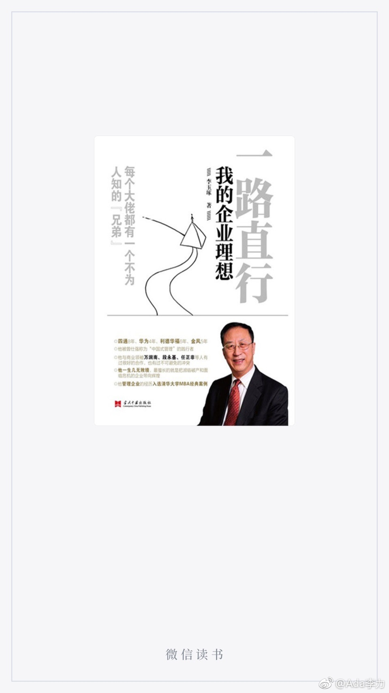

#读书#感谢@蟹困困 推荐了这本书，一口气读完。
能有人这么真诚地，事无巨细地写出自己的职业经历，是读者的幸运。企业从外看，和从内看，会得出完全不同的结论，可惜，能站在相当高度，从内看企业的论著太少，尤其是李玉琢还近距离地跟万润南和任正非工作过，他的臧否更有参考价值，也更难得。
只是李玉琢的几次离职，都是自尊心受伤引起，他很看重老板的信任，例如从四通离开的正式理由仅仅是一次查账。我读时会在想：是完成事情重要，还是自己的人格面子重要？至少我现在觉得，要做成艰难的事情，不承受些委屈是不行的。
李玉琢身上有浓重的传统知识分子特点，勤于动脑，矜矜业业，洁身自好，是非分明，但也有些自命清高。在利德华福门口立块30吨的石头，背面刻上自己的题诗，也确实是这样的知识分子才能干出的事儿。我脑补下那个大石头场景，觉得土得不行，也实在没必要。
读这本书其实时时有似曾相识之感，李玉琢的一些想法和做法，在我身上曾出现过。退休状态让他回忆过往时可以做到很坦诚，而我却在想，自己以后说话会越来越谨慎的。
能有人这么真诚地，事无巨细地写出自己的职业经历，是读者的幸运。企业从外看，和从内看，会得出完全不同的结论，可惜，能站在相当高度，从内看企业的论著太少，尤其是李玉琢还近距离地跟万润南和任正非工作过，他的臧否更有参考价值，也更难得。
只是李玉琢的几次离职，都是自尊心受伤引起，他很看重老板的信任，例如从四通离开的正式理由仅仅是一次查账。我读时会在想：是完成事情重要，还是自己的人格面子重要？至少我现在觉得，要做成艰难的事情，不承受些委屈是不行的。
李玉琢身上有浓重的传统知识分子特点，勤于动脑，矜矜业业，洁身自好，是非分明，但也有些自命清高。在利德华福门口立块30吨的石头，背面刻上自己的题诗，也确实是这样的知识分子才能干出的事儿。我脑补下那个大石头场景，觉得土得不行，也实在没必要。
读这本书其实时时有似曾相识之感，李玉琢的一些想法和做法，在我身上曾出现过。退休状态让他回忆过往时可以做到很坦诚，而我却在想，自己以后说话会越来越谨慎的。
- 